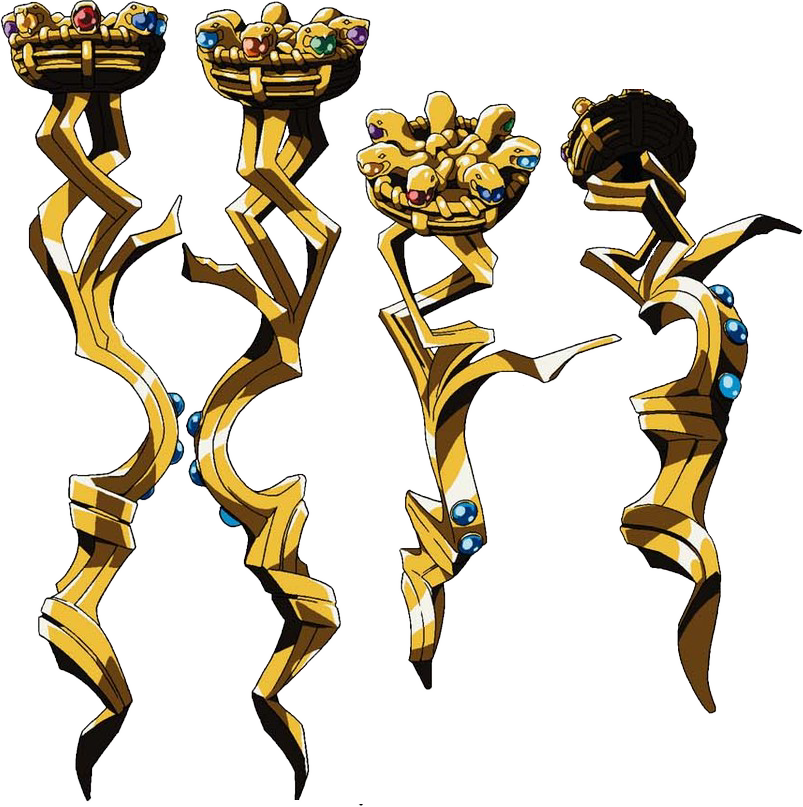

Description
General
-Staff of Ainz Ooal Gown is the Guild Weapon of Ainz Ooal Gown. Currently, with this guild weapon in his possession, Momonga was said to be the master of the guild.
Being the guild weapon as it is, the Staff of Ainz Ooal Gown was designed with supreme quality while taking on the name of the respective guild. It is a powerful item that was said
to be the symbol of Ainz Ooal Gown, a guild comprised of entirely heteromorphic monsters. A guild master like Momonga would usually carry this staff as a symbol of their guild's might and power.
However, the destruction of its guild weapon signifies the dissolution of their guild. That was why the staff is secretly stored in the most secure location with their powerful abilities never
seeing the light of day. For such a reason, the staff was never handed to Momonga despite it being custom-made for him only, and instead was adorned on a wall in the heart of the Great Tomb of Nazarick.
Moreover, the guild members of Ainz Ooal Gown had managed to work together in order to craft this symbolic weapon that stands for their guild. Collaboratively, this was done through a type
of joint project that took many years and sacrifices away from their day-to-day lifestyle in exchange for them to even make at last. For instance, it took them an enormous amount of time hunting down
monsters to acquire those jewels. As a result of their guild's collective teamwork, the weapon itself was strongly made out of a series of various powerful artifacts imbued with magical spells for its wielder
to use and activate. These artifacts were in fact each collected and won by the guild members, so as to complete the creation of their masterpiece which is the Staff of Ainz Ooal Gown.
To Momonga, it represents the joyful memories of his old times, where he once played YGGDRASIL alongside his fellow guild members before they quit the guild and game. Yet at the same time,
it also represents at best the testament of his comrades' combined efforts based on both their abilities and perseverance to completing the collection. Through gathering the collection of artifacts
used to craft the Staff of Ainz Ooal Gown, they're what visually defines the appearance of their guild weapon as well as the amount of powers contained in it overall.
Currently, the Staff of Ainz Ooal Gown is now left under the possession of Aureole Omega in the Cherry Blossom Sanctuary, where it is being look after and protected by ever since.
In an alternate setting that is unique from the main timeline of Overlord, Momonga who has brought the Staff of Ainz Ooal Gown with him outside the Great Tomb
of Nazarick have ended up getting teleported to the New World alone without his guild base. Considering that the dungeon was supposed to be the guild base for the guild master to
safeguard his guild weapon, it was no longer around anymore for Momonga to fret over.Knowing all this, Momonga have chosen to equip and use the Staff of Ainz Ooal Gown for the first
time against Elder Coffin Dragon Lord by the name of Cure Elim Los Malvar.
Appearance
The Staff of Ainz Ooal Gown takes on traits similar to that of the Greek God Hermes' caduceus. It is entwined by seven serpents and in each of the squirming serpents’ mouths hold a jewel of a different color.
Its grip has a transparent quality like crystal and emits a bluish white light. When touched, it spews a dark red aura. Sometimes, the faces of humans in agony would appear and crumble away
dance on its surface. Such of an effect from the staff is so vivid that it felt as though one could hear their voices of pain. If needed, Ainz could deactivate the special effects like the malevolent aura wreathing
from the Staff of Ainz Ooal Gown to disappear.
Abilities
As a weapon of the highest order, the Staff of Ainz Ooal Gown is capable of high feats of magic and was made for solely Momonga to use and nobody else. The seven gemstones in the Staff’s
snake mouths are all purely made up of divine-class artifacts, with the elemental alignments of Sun, Moon, Earth, Fire, Wind, Water, and Time. The staff possessed the ability to use each of the
spells sealed within each one of the seven gems. Since they all belong in a complete set, having them together unlocks even greater power beyond their base abilities.
Thus, the staff's power is beyond that of a divine-class item. In fact, it is almost on the same level to that of a World Item due to the amount of power embedded into it.
The seven jewels altogether embedded in the staff contains powerful high-tiered spells. For example, with the power from the red jewel in the staff,
the user could summon at least one Primal Fire Elemental per day. According to Ainz, the summoning of such high-leveled monster was only a mere fraction of its full power.
Ainz making changes to Albedo's setting.
Apart from that, it can also summon very low-leveled monsters like a Moonlight Wolf through using the Staff of Ainz Ooal Gown.
The summoned monsters from the staff are non-permanent such as most magic summoned monsters confirmed by Kugane Maruyama, the author.
Better yet, if the guild master were to start equipping this type of weapon, it grants that user enhancement over their own racial skills.
For instance, once equipped by Ainz, it can strengthened the effects of Despair Auras, a racial skill to the point wherein which,
this staff's power is able to affect even level 100 NPCs. While so, this guild weapon too could increase his stats to higher numbers
On the other hand, it also grants the guild master the rights, privileges, and accessibility to the various parts and functions within the Great Tomb of Nazarick.
Given its authority, it can even override certain restricted settings or access and then re-edit them like the Custom NPCs' backstories.
Importantly, the Staff of Ainz Ooal Gown's most potent feature is its automatic engagement system. In combat, Ainz can initiate it to undergo automatic interception mode. After the staff obeyed his order,
it will begin moving on its own independently from Ainz to attack his enemies. Sharing a mental bond with Ainz, the staff would automatically select the most appropriate spells to utilize and cast on his foes
without requiring himself to perform the casting. This staff can read and understand Ainz's thoughts or way of thinking, knowing full well what he is asking for and does it accordingly without waiting for the user's command.
Moreover, the power of the guild weapon can be seen emanating with aura surrounding itself upon using it. With the weapon in his grasp, Ainz uses it to resurrect a dead Custom NPC
like Shalltear back to life as long as the amount of required gold are provided accordingly.
List of Active Spells
- Crack In The Ground: A 9th tier divine spell which causes the ground to split open, creating a fissure that gripped the foe’s leg as an entrapment.
It possessed an instant-death effect which requires a specific amount of time to activate and take effect. However, the damage over time and movement impediment effects should have applied after casting the spell.
- Dimensional Lock: An 8th-tier spell used to prevented instantaneous movement through means such as teleportation outside its area, but it did not hamper physical movement. While demons, angels and other outsiders often used this ability as a skill, this spell had the same function.
- Fire Storm: Through the Fire Gem, a divine area-effect attack spell can be use by the staff or user equipped with it.
- Shining Blast: Through the Sun Gem, the staff or equipped user can cast an area-effect attack spell, which did extra damage to evil creatures and the undead, with more damage the lower their karma value was.
In turn, as their targets’ karma increased, it would do less or no damage to them.
- Summon Primal Air Elemental
- Summon Primal Earth Elemental
- Summon Primal Fire Elemental
- Summon Primal Star Elemental
- Summon Primal Water Elemental
- Veil of Moon: Through the Moon Gem, a defensive-type spell is cast on the user by its staff. This grants the user immaterial magical barrier around itself.
- Vermilion Nova: Through the Sun Gem, a 9th tier spell can be used once a day by the staff. It is an attack targeting the opponent with a pillar of flame while dealing with a fire-based type of damage.
Ainz considered it be the highest-level, super-tier magic that is notwithstanding anti-personnel fire-element attack spell.
This spell could be used in combination with both Triplet Magic and Maximize Magic together.
|